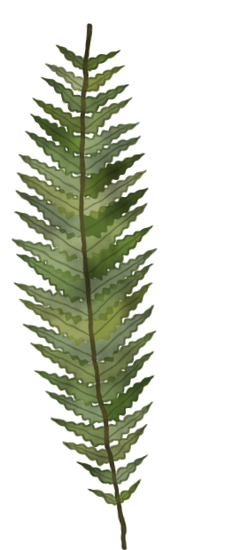

Body Double
villageHXQR
Chapter III of VI
Which one is really Maya?
14seconds
"your toxic trait, but make it cute"
You can change your pick until time runs out.

is it you, Maya? →
🦉
Maya
the bard
Chapter III of VI
"your toxic trait, but make it cute"
You can change your pick until time runs out.

is it you, Maya? →